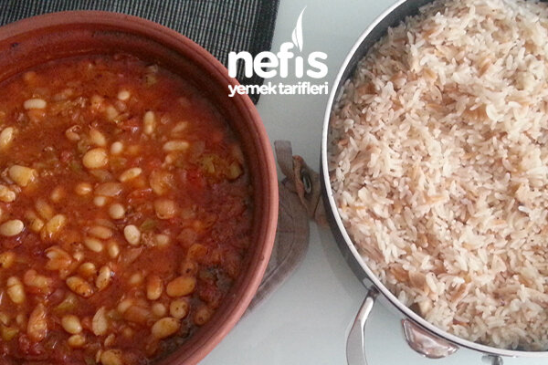

Yemek Tarifleri
> Tarifler
> Bakliyat Yemekleri
>
Kuru Fasulye Pilav Tarifi
Kuru Fasulye Pilav Tarifi

Kuru Fasulye İçin;
- 2 su bardağı kuru fasulye
- 1 adet kuru soğan
- 2 adet domates
- 2 adet sivri biber
- 100 gram kıyma
- Yarım yemek kaşığı salça
- Tuz
- Karabiber
- Defne yaprağı (isteğe bağlı)
Pilav İçin;
- 2 su bardağı pirinç
- Yarım çay bardağı arpa şehriye
- 1 yemek kaşığı tereyağı
- Tuz
- 2 su bardağı sıcak su
-
1,5 su bardağı sıcak tavuk suyu (yoksa toplamda 3,5 su bardağı
normal sıcak su konmalı)